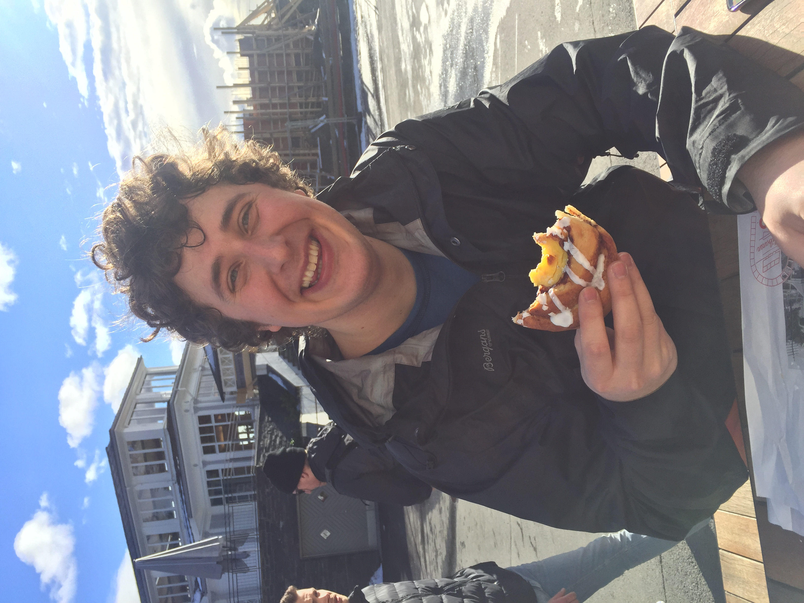

Scroll allong my web dev journy

Welcome to my portfolio. My name is Eirik Kirkeli and on this page, I will display my journey from beginner to professional web developer. I am a student at Noroff Vocational College in Norway. I started my journey in 2022 as a beginner and invite you to see my journey into the fantastic world of web development.